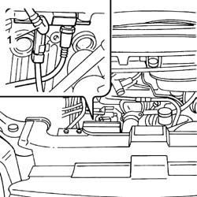
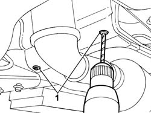
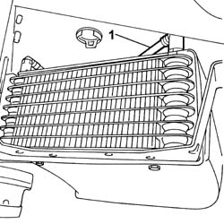
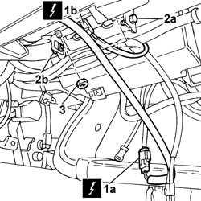

1040B54 FUEL LINE FROM MANIFOLDS - R R
- Path
- Procedures > 10 ENGINE > 1040 FUEL TANK AND PIPES > 1040B FUEL SUPPLY/RETURN CIRCUIT PIPE > 1040B54 FUEL LINE FROM MANIFOLDS - R R
- Kind
- repair procedure (removal / refitting; the operation number is the code)
- Applies to
- engines: 2.0 16V JTD, 2.2 16V JTD; all production periods
- Interactive page
- https://sloeber94.github.io/elrnDB-fUlss/en/#/179006987
Applies to: engines: 2.0 16V JTD; all production periods
 Removing
Removing
 Refitting
Refitting- Position the vehicle on a lift.
1. Disconnect the rapid connector connected to the return pipe from the manifold.

Applies to: engines: 2.0 16V JTD; all production periods
- Raise the vehicle.
1. Remove the rivets using a drill fitted with an appropriate diameter helical point.

Applies to: engines: 2.0 16V JTD; all production periods
1. Disconnect the rapid connector for the return pipe from the fuel cooling device.
- Release the front fuel return pipe from the retaining bands and remove it.

Applies to: engines: 2.0 16V JTD; all production periods
Refitting
Removing- Connect the rapid connector for the return pipe from the fuel cooling device.
- Refit the rivets removed previously using a riveter.
- Connect the rapid connector connected to the return pipe from the manifold.
- Position the vehicle on a lift.
Applies to: engines: 2.2 16V JTD; all production periods
Removing
Refitting- Position the vehicle on the lift.
1. Disconnect the rapid connector connected to the return pipe from the manifold.
Applies to: engines: 2.2 16V JTD; all production periods
- Raise the vehicle
1. Remove the rivets using a drill fitted with an appropriate diameter helical point.
Applies to: engines: 2.2 16V JTD; all production periods
1. Disconnect the rapid connector for the return pipe from the fuel cooling device.
- Release the front fuel return pipe from the retaining bands and remove it.

Applies to: engines: 2.2 16V JTD; all production periods
Refitting
Removing- Connect the rapid connector for the return pipe from the fuel cooling device.
- Refit the rivets removed previously using a riveter.
- Connect the rapid connector connected to the return pipe from the manifold.
- Position the vehicle on a lift.